1. Eerste stappen
Welkom bij ScoutingHub — je persoonlijke scoutingstool voor jeugdvoetbal. Dit hoofdstuk laat je inloggen, de app installeren en de dagelijkse flow begrijpen.
1.1 Inloggen
Open ScoutingHub in je browser (of geïnstalleerde app) en log in met je e-mailadres en wachtwoord.
- Tik het oogje om je wachtwoord te controleren.
- Wachtwoord vergeten? Klik de link onder het formulier — je krijgt een reset-link per e-mail.
- Heb je nog geen account? Vraag toegang aan via de knop Toegang aanvragen. Een beheerder rondt dit af.
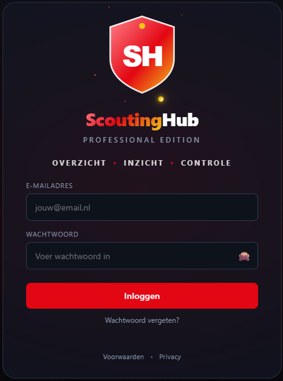
1.2 App installeren (PWA)
ScoutingHub werkt als een echte app op je telefoon — geen App Store nodig.
iPhone (Safari)
- Tik op de Deel-knop (□↑).
- Kies Zet op beginscherm.
Android (Chrome)
- Tik op het menu (⋮).
- Kies App installeren of Toevoegen aan startscherm.
1.3 De scoutdag in vijf stappen
ScoutingHub begeleidt je door elke stap — van plannen tot vergelijken.
2. Dashboard & menu
Na het inloggen kom je op het dashboard. Hier vind je een snel overzicht en toegang tot alle modules.
2.1 Het dashboard
Het dashboard is je startpunt voor elke scoutdag. Je ziet in één oogopslag:
- KPI-tegels — aantal spelers, rapporten en wedstrijden in je database.
- Agenda / live-tegels — je geplande en lopende wedstrijden.
- Snelknoppen — + Rapport en + Wedstrijd om meteen aan de slag te gaan.
- Recente activiteit — je laatste rapporten en observaties.
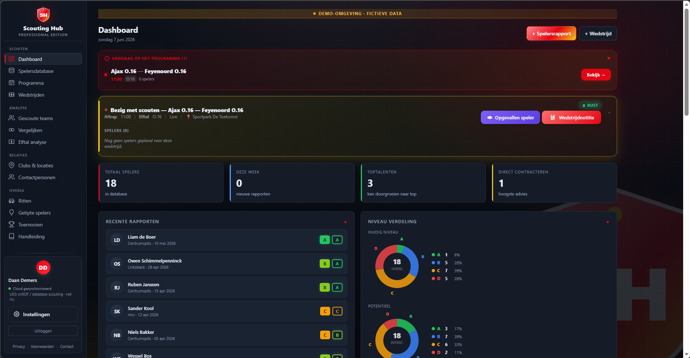
2.2 Het menu (sidebar)
Links vind je het navigatiemenu met alle modules. Op mobiel open je het met de menuknop (☰) linksboven.
| Module | Wat doe je hier? | |
|---|---|---|
| 📊 | Dashboard | Startpagina, KPI's, agenda |
| 👤 | Spelers | Database van al je gescoute spelers |
| 📋 | Wedstrijden | Overzicht van alle gescoute wedstrijden |
| 📅 | Programma | Komende wedstrijden plannen en beheren |
| ⚖️ | Vergelijken | Spelers head-to-head vergelijken |
| ⚽ | Elftallen | Opstellingen bouwen met je spelers |
| 🏆 | Toernooien | Toernooi-modus met importeer en bundeling |
| 💡 | Tips | Getipte spelers bijhouden |
| 🚗 | Ritten | Kilometer-registratie en declaraties |
| 📖 | Adresboek | Clubs en locaties |
| 👥 | Contacten | Trainers, coördinatoren, relaties |
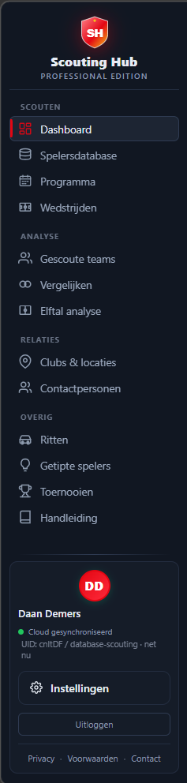
2.3 Instellingen
Open Instellingen via het tandwiel-icoon in het menu. Je vindt er vier secties:
- Account — je e-mailadres, rol en team (alleen-lezen).
- App installeren — klik Installeer app om ScoutingHub als PWA op je beginscherm of bureaublad te zetten (ook beschikbaar via 1.2).
- Profielfoto — kies een JPG of PNG. Verschijnt in de zijbalk en op al je apparaten. Geen foto? Dan zie je je initialen.
- Persoonsgegevens — telefoon, adres en voorkeuren (alleen voor jou zichtbaar).

3. Programma & wedstrijden
Plan een wedstrijd, koppel de spelers die je wilt scouten en bekijk de voortgang.
3.1 Wedstrijd aanmaken
- Ga naar Programma en klik op + Nieuwe wedstrijd.
- Vul in: datum, tijd, thuis- en uitploeg, leeftijdscategorie en optioneel locatie / veld.
- Klik op Opslaan. De wedstrijd verschijnt direct in je programma en op het dashboard.
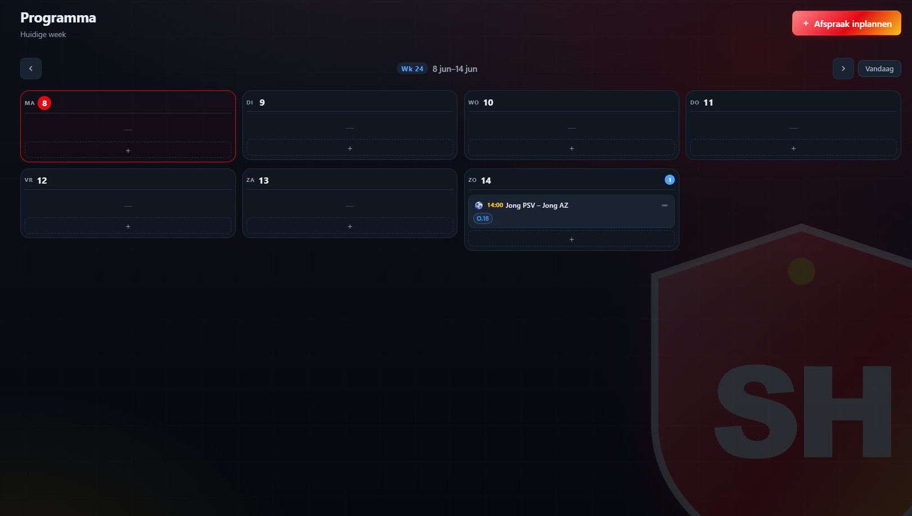
3.2 Spelers koppelen
Open een wedstrijd en koppel de spelers die je wilt volgen:
- Klik op + Speler koppelen in het wedstrijd-detail.
- Zoek op naam of blader door je database.
- Selecteer en bevestig — de speler staat nu klaar om te scouten.
Naast elke gekoppelde speler staat een obs-knop om direct een observatie te starten.
3.3 Voortgang bijhouden
In het wedstrijd-overzicht zie je per wedstrijd een voortgangsbalk: hoeveel gekoppelde spelers je al hebt beoordeeld (bijv. 3/5 ✅). Zo mis je niemand.
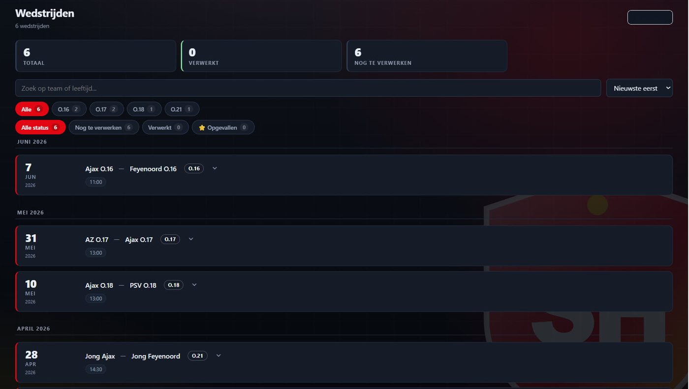
3.4 Uitslag & afronden
Open de wedstrijd na afloop en vul de einduitslag in. Afgeronde wedstrijden tellen mee in je statistieken.
4. Scouten langs de lijn
Tijdens een live wedstrijd werk je vanuit de Wedstrijden-view. Alles werkt offline — automatisch gesynchroniseerd zodra je weer bereik hebt.
4.1 De live-kaart
Open Wedstrijden in het menu. Lopende of geplande wedstrijden verschijnen als een live-kaart bovenaan, met drie actieknoppen:
- 🔗 Gekoppelde speler(s) — spelers die je vooraf aan deze wedstrijd hebt gekoppeld.
- 👁 Opgevallen speler — om snel een speler te noteren die je op het veld spot.
- 📋 Wedstrijdnotitie — voor algemene observaties over de wedstrijd zelf.
4.2 Gekoppelde speler — live noteren via tiles
Elke vooraf gekoppelde speler heeft een eigen tile. Tik op een tile om hem uit te klappen — je ziet dan acht snelle invulvelden:
- techniek — bv. "scherp, eerste aanname goed"
- inzicht — bv. "leest spel goed, scan hoog"
- mentaliteit — bv. "werkt hard, leidersfiguur"
- explosiviteit — bv. "eerste 5 meter sterk"
- sprinten — bv. "topsnelheid hoog"
- duelleren — bv. "wint 1-op-1 in de rug"
- wendbaarheid — bv. "soepel, lichtvoeting"
- algemeen — overige opmerkingen
De notities worden automatisch opgeslagen terwijl je tikt — je hoeft geen knop in te drukken. Sluit de tile met ✕ en ga verder naar de volgende speler.
Vind je een speler opvallend? Tik ☆ Opvallend — de tile krijgt een ⭐ en springt bovenaan. Zo mis je hem later niet.
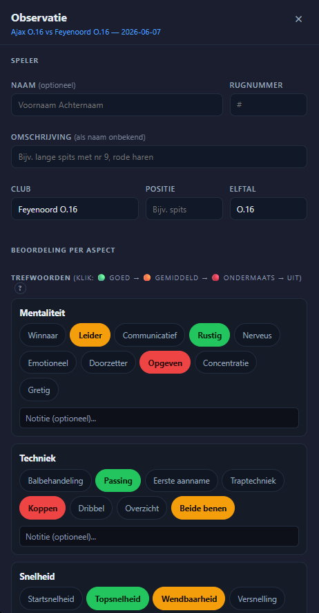
4.3 Opgevallen speler — een onbekende noteren
Zie je een speler die je niet vooraf had gekoppeld? Tik op 👁 Opgevallen speler. Er opent een observatieformulier:
- Vul in wat je weet: naam (of later), rugnummer, club, positie, elftal.
- Gebruik dezelfde acht notitievelden als bij de tile.
- Geef een huidig niveau (A/B/C/D) en optioneel een advies.
- Tik Opslaan als observatie — je gaat terug naar de wedstrijd. De obs is opgeslagen en heropenbaar via de knop Opgevallen speler (x).
Je kunt meerdere opgevallen spelers per wedstrijd hebben, elk als eigen obs-draft.
4.4 Wedstrijdnotitie
Tik op 📋 Wedstrijdnotitie voor een algemene notitie over de wedstrijd. Je hebt drie tekstgebieden: thuis, uit en gedeeld. Dit is handig voor teamobservaties of context die je later in een rapport wilt gebruiken.
4.5 Beoordeling A–D
Bij elke observatie (opgevallen speler) geef je een totaaloordeel op twee assen:
- Huidig niveau — wat laat de speler vandaag zien?
- Potentieel — welk niveau kan hij bereiken?
- A Champions League-niveau — uitzonderlijk, ver boven zijn leeftijdscategorie. Maximaal 1–2 per wedstrijd.
- B Top Eredivisie-niveau — duidelijk beter dan gemiddeld op dit niveau.
- C Eredivisie-niveau — past bij het niveau, geen negatieve uitschieters.
- D KKD / onder niveau — presteert onder verwachting voor zijn leeftijdscategorie.
Een speler kan nu een C zijn (huidig) maar een A-potentieel hebben — júist die combinatie is het meest waardevolle signaal voor een scout.
5. Rapporten
Na de wedstrijd werk je je live-notities en observaties uit tot volledige, ingediende spelersrapporten.
5.1 Wedstrijd-detail na afloop
Open de wedstrijd na afloop via Wedstrijden. Je ziet per wedstrijd een overzicht met blokken — één blok per observatie (OBS) en één per wedstrijdrapport. Bovenaan staat de status:
- ✓ ALLES VERWERKT (groen) — alle gekoppelde spelers hebben een rapport of observatie.
- Counter "1 observatie · 1 wedstrijdrapport" — direct zichtbaar hoeveel je hebt vastgelegd.
Een OBS-blok en een Wedstrijdrapport-blok zijn aparte objecten — geen van beiden wordt automatisch omgezet naar het andere.

5.2 Observatie vs. rapport — wat is het verschil?
Er zijn twee manieren om iets vast te leggen over een speler, met een andere herkomst:
- Observatie (OBS) — ontstaat vanuit een opgevallen speler. Je hebt de speler niet vooraf gekoppeld — je spot hem op het veld en noteert snel wat je ziet. In de spelersdatabase herken je observaties aan het paarse OBS-badge. Kolommen Huidig en Potentieel blijven leeg (–).
- Rapport — ontstaat vanuit een gekoppelde speler. De speler is vooraf aan de wedstrijd gekoppeld, je hebt hem live gevolgd via de tile, en na de wedstrijd dien je een volledig rapport in met A/B/C/D-grades en advies.
In het wedstrijd-detail zie je beide blokken naast elkaar. Status ✓ ALLES VERWERKT verschijnt zodra alles is ingediend.
5.3 Het rapportformulier
Het rapportformulier heeft de volgende onderdelen:
- Spelersgegevens — naam, geboortejaar, positie, elftal, club.
- Categorieën — per categorie (techniek, inzicht, mentaliteit, explosiviteit) een tekstveld voor toelichting.
- Huidig niveau (A/B/C/D) — verplicht.
- Potentieel (A/B/C/D) — je verwachting op langere termijn.
- Advies — jouw aanbeveling (bv. "Volgen", "Uitnodigen", "Niet interessant").
- Algemeen — vrije tekst voor overige opmerkingen.
Een rapport begint altijd als concept — je kunt het zo lang bewerken als je wilt voordat je indient.
5.4 Indienen
Klik op Indienen om het rapport definitief te maken. Daarna:
- Het rapport verschijnt in het spelersprofiel onder de volledige scoutingshistorie.
- Het telt mee in de Vormtrend en de Vergelijken-module.
- De voortgangsbalk van de wedstrijd bijt bij (bijv. 3/5 ✅).
5.5 Rapport zonder wedstrijd
Wil je een rapport schrijven dat niet aan een wedstrijd is gekoppeld? Klik op + Rapport op het dashboard of in de spelersdatabase. Het formulier (zie 5.3) opent leeg en je vult alles handmatig in.
5.6 PDF exporteren
Open een ingediend rapport en klik op PDF voor een nette PDF-versie — inclusief foto van de speler, beoordelingen en notities.
6. Spelersdatabase
Al je gescoute spelers op één plek — doorzoekbaar, filterbaar en met volledige scoutingshistorie.
6.1 De spelersdatabase
De database toont al je gescoute spelers in een tabel. Bovenaan staat de legende voor de grades:
- A Champions League B Top Eredivisie C Eredivisie D KKD / onder niveau
De kolommen zijn: Speler · Positie · Club · Elftal · Huidig · Potentieel · Advies · Datum.
Spelers met alleen een observatie (nog geen ingediend rapport) hebben een paars OBS-badge naast hun naam. De kolommen Huidig en Potentieel tonen dan –. Zodra er een ingediend rapport is, verschijnen de gekleurde grade-squares.
Zoek op naam, club, positie of leeftijd. De zoekfunctie is tolerant voor tikfouten: "Jnsen" vindt ook "Jansen".
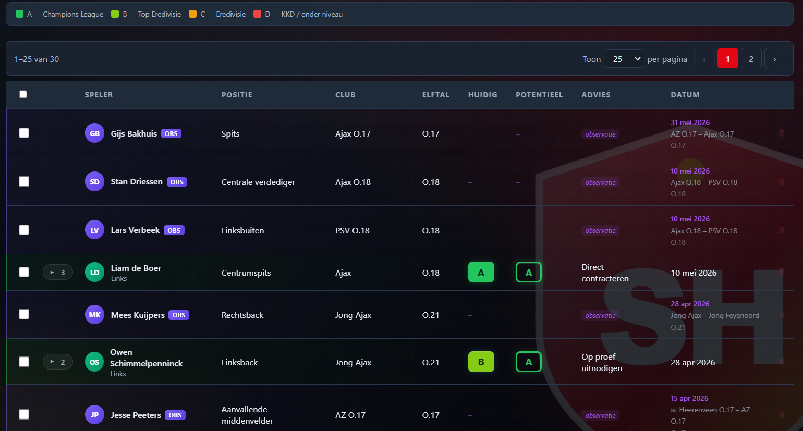
6.2 Spelersprofiel
Open een speler om alle gegevens, rapporten en observaties te zien. Naast de naam staat een foto-cirkel:
- Tik erop om een foto te maken (handig langs de lijn) of te uploaden.
- De foto verschijnt in het profiel, de database-lijst, bij Vergelijken en in de PDF.
- Geen foto ingesteld? Dan zie je de initialen van de speler.
6.3 Scoutingshistorie
Alle rapporten en losse observaties staan in chronologische volgorde, zodat je de volledige scoutingshistorie van een speler in één oogopslag ziet.
6.4 Vormtrend
Heeft een speler twee of meer rapporten, dan toont het profiel een 📈 Vormtrend:
- Een lijngrafiek van huidig- en potentieelniveau door de tijd.
- Per categorie een mini-grafiek (sparkline) met een trendpijl: ↗ stijgend · → stabiel · ↘ dalend.
Minder dan 2 rapporten? Dan staat er "Onvoldoende data voor trend".
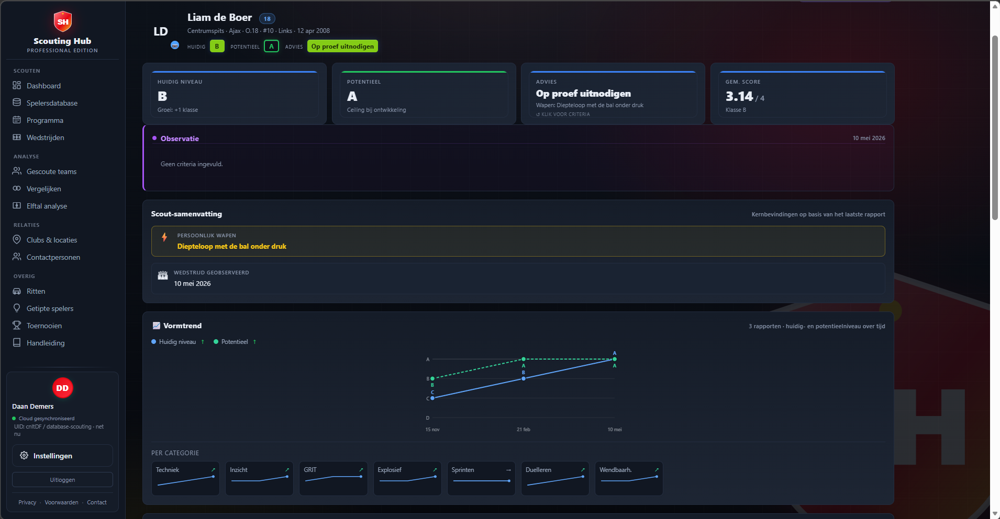
7. Toernooien
Scout een heel toernooi vanuit één overzicht — van import tot bundeling en eindrapporten.
7.1 Toernooi importeren via Tournify
- Ga naar Toernooien en klik op + Nieuw.
- Plak de Tournify-link van het toernooi.
- Programma, teams en wedstrijden worden automatisch ingeladen. Dubbelen worden herkend en niet opnieuw toegevoegd.
Later opnieuw synchroniseren? Nieuwe of gewijzigde wedstrijden en uitslagen worden dan bijgewerkt.
7.2 Programma
De tab Programma toont alle wedstrijden van het toernooi per tijdsblok. Per wedstrijd zie je het veld, de poule, de uitslag en welke spelers je al hebt gelinkt. Lopende wedstrijden tonen de fase (1e helft, rust, 2e helft) met meelopende speeltijd.
Filter direct op watch-status: Bekijken Optioneel Niet haalbaar.

7.3 Mijn programma
In Mijn programma bouw je je persoonlijke scoutdag. Volg clubs via de Spelers-tab om hun wedstrijden automatisch toe te voegen, of klik + Wedstrijd toevoegen om handmatig te kiezen.

7.4 Teams
De tab Teams toont alle deelnemende clubs per categorie. Per club zie je hoeveel spelers je al hebt gekoppeld. Klik ★ Volgen om een club te volgen — hun wedstrijden verschijnen automatisch in Mijn programma. Via + Speler koppelen voeg je direct een speler toe.

7.5 Standen
De tab Standen toont de ranglijst per poule met gespeeld, gewonnen, gelijk, verloren, doelpuntensaldo en punten. De stand wordt automatisch bijgewerkt zodra uitslagen binnenkomen.

7.6 Scouten & afronden
Open een wedstrijd en scout de spelers — dezelfde chips-flow als in hoofdstuk 4. Uitslag invoer je direct in de wedstrijd.
Klaar? Klik Afronden (tab bovenin) om het toernooi af te sluiten. Alle observaties worden gebundeld per speler en verschijnen in de spelersdatabase.
8. Extra modules
Vergelijken, opstellingen bouwen, kilometers bijhouden en meer.
8.1 Vergelijken
Zet twee of meer spelers naast elkaar via Vergelijken in het menu. Je ziet:
- Totaalindruk — een donut per speler met de algemene score.
- Niveau-matrix — de A/B/C/D-beoordelingen per categorie naast elkaar.
- Head-to-head per eigenschap — balken die de spelers eigenschap-voor-eigenschap tegenover elkaar zetten.
- Trend-indicator onder de radar, bijv. "↗ stijgend, B→A over 3 rapporten".
Spelers met alleen observaties (geen ingediend rapport) krijgen een geschatte score — duidelijk gelabeld als "📋 Observatie (geschat)" met een gestreepte lijn.
Exporteer als PDF of deel de vergelijking via een link.
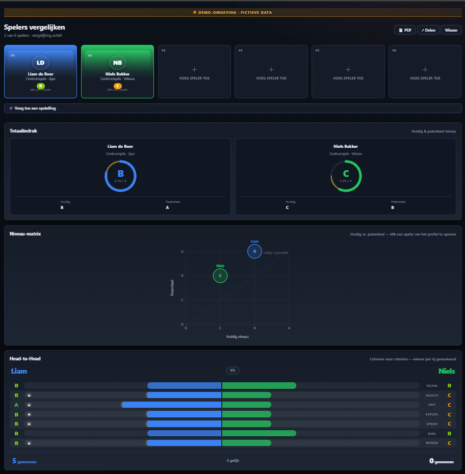
8.2 Elftallen: opstelling bouwen
In Elftallen bouw je een opstelling op het veld. Klik op een positie en je krijgt automatisch voorgestelde kandidaten uit je database die op die positie passen — gesorteerd op recentste rapport en hoogste score.
- Vanuit Gescoute teams open je met "📊 Analyseer dit team" meteen de juiste spelers.
- Vanuit Vergelijken stuur je een selectie door met "➕ Voeg toe aan opstelling".
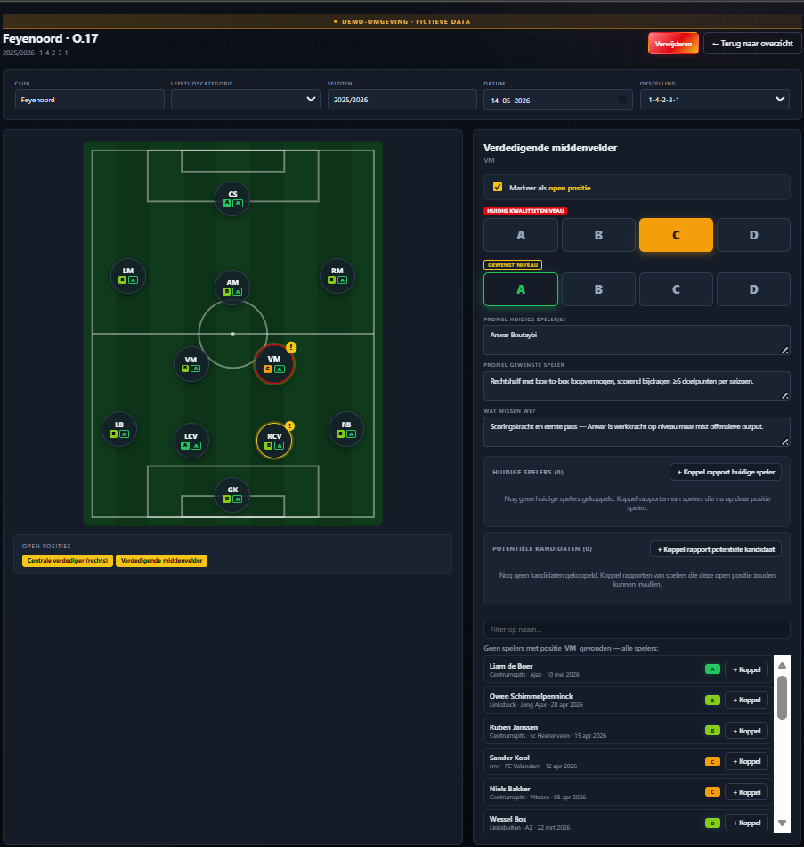
8.3 Ritten: km bijhouden
Registreer je kilometers via Ritten:
- Vul per rit in: van / naar / km / doel.
- Sla veelgebruikte routes op als favoriete route — vul ze met één tik in, pas alleen de datum aan.
- Je km-tarief stel je in bij Instellingen. Per rit zie je het bedrag en de maandtotalen.
- Exporteer als CSV of als nette PDF-declaratie.
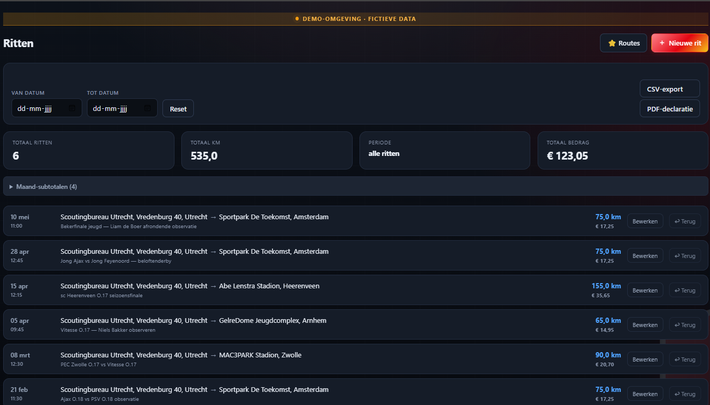
8.4 Tips: getipte spelers
In Tips houd je spelers bij die je zijn aangedragen of die je op je radar wilt houden zonder nog een volledig rapport te schrijven. Voeg een notitie en datum toe.
8.5 Adresboek & contacten
Adresboek bevat clubs en sportparken, doorzoekbaar per letter of provincie. In Contacten houd je trainers, coördinatoren en andere relaties bij.
8.6 Offline werken
Geen bereik op het sportpark? ScoutingHub werkt ook offline. Observaties en rapporten worden lokaal opgeslagen en automatisch gesynchroniseerd zodra je weer online bent.
8.7 Feedback sturen
Zie je iets dat niet klopt, mis je een functie of heb je een suggestie? Klik op het feedback-icoon in de app. Het formulier vraagt om:
- Een korte beschrijving van wat je ziet, mist of wilt verbeteren.
- Optioneel: een screenshot of bijlage (max 5 MB).
Je naam en e-mailadres worden automatisch meegestuurd. De beheerder ziet je feedback direct in het beheerpaneel.
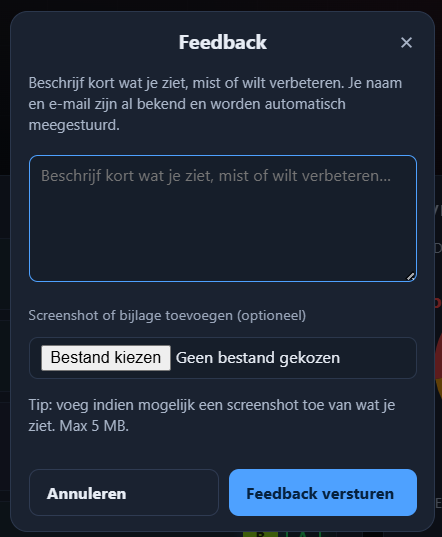
8.8 Best practices
- Scout live met chips — leg je eerste indruk vast op het moment zelf, niet achteraf.
- Wees consistent in je A/B/C/D-beoordeling zodat spelers vergelijkbaar blijven. Gebruik A spaarzaam.
- Vul notities kort en concreet in langs de lijn. Werk ze later thuis uit tot een volledig rapport.
- Gebruik Mijn programma bij toernooien om je tijd slim te plannen en conflicten te zien.
- Bekijk de Vormtrend regelmatig — klopt je potentieelschatting nog na 6–12 maanden?